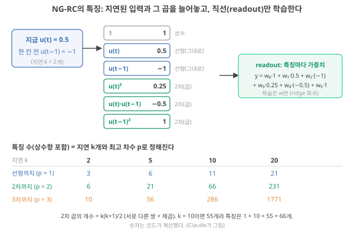
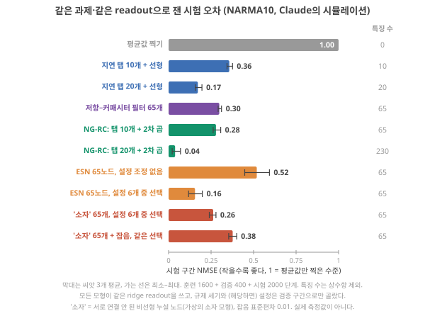

Day 29. 기준선의 종류와 다항 회귀·NG-RC 비교
Phase 3 · 좋은 시스템이란 무엇인가
이번 질문 어떤 기준선과 비교해야 하고, 단순한 모형은 NARMA10에서 얼마나 하나?
왜 배우나 내 NMSE의 크기를 알려면 device 없는 NG-RC 기준선을 같이 돌려야 한다.
오늘의 장면 NARMA10 입력·정답 → device를 한 가지씩 뺀 기준선 → 같은 readout·예산·특징 수로 학습 → 기준선별 NMSE 표
오늘 반드시 어떤 기준선을 이겼는지가 주장의 범위다. NG-RC는 reservoir computing과 같은 구조의 어려운 상대다.
나중에 봐도 됨 특징 수 C(k+p, p) · '86%' 분산 계산 · 모형 순위 숫자
넘어가는 기준 '오늘 반드시'를 내 말로 말할 수 있으면 충분합니다.
이후 쓰이는 곳 Day 31–32 정확도 옆의 비용 · Day 33–34 device 편차 · Day 47–48 기준선 칸 · Day 55–56 최소 검증 실험
지난 학습 복습
지난 학습 단위(Day 28 · MNIST·NARMA·spoken digit이 검증하는 것)의 핵심을 다른 예로 확인합니다. 고르는 즉시 맞았는지와 이유가 보입니다. 틀려도 아래 학습자료는 그대로 열려 있고, 틀린 문제에는 다시 볼 곳이 붙습니다.
사전 테스트 (선택)
사전 테스트 펼치기 · 배우기 전에 짐작해 보는 문제 (선택)
학습자료
지난 학습(Day 27–28)에서는 벤치마크(여러 연구가 같은 과제·같은 채점으로 성능을 견주도록 정해 둔 표준 시험 과제, MNIST·NARMA·spoken digit이 각각 시험하는 것) 성적표가 무엇을 시험하고 무엇을 시험하지 못하는지 봤습니다. 이번에는 그 성적표 옆에 무엇을 나란히 놓아야 하는가를 봅니다. 시험 점수 80점은 반 평균이 40점인지 95점인지 모르면 아무 뜻이 없습니다. Device 논문의 "정확도 90%"나 "NMSE 0.26"도 같습니다. 이 Day 내내 숫자 하나를 들고 다닙니다. 어떤 'device'가 NARMA10(Day 21–22에서 돌려 본, 기억과 곱셈을 함께 묻는 시험 과제)에서 낸 NMSE 0.26입니다(NMSE는 오차의 크기로, 0이면 완벽, 1이면 평균값만 찍은 수준). ‘NARMA10 열 모형 비교’ 구간에서 직접 만들어 보는 가상의 device 모형의 결과이고, 구간마다 이 숫자를 새 기준선 옆에 놓아 봅니다. 질문은 다섯으로 쪼개집니다. 앞을 알아야 뒤가 읽힙니다.
이 주제의 질문 순서 — 이번 Day 29에서는 구간 1–3만 읽습니다. 나머지는 Day 30에서 이어집니다(구간 번호는 원래 한 묶음이던 순서 그대로입니다).
- 기준선(baseline)에는 어떤 종류가 있고, 각각은 어떤 질문에 답하나? → 구간 1
- 다항 회귀와 NG-RC는 무엇인가? "지연된 입력과 그 곱"을 손으로 만들어 본다. → 구간 2
- 같은 과제(NARMA10)에서 여러 기준선을 실제로 돌리면 숫자는 어떻게 줄을 서나? → 구간 3
- 저항과 capacitor 두 부품만으로 같은 응답이 나오면, 이온 소재는 무엇을 더 보여야 하나? (Day 30에서)
- 공정한 비교의 규칙은 무엇이고, 그 요구는 원리 증명 단계의 device 연구에 과한가? (Day 30에서)
1. 비교 없는 숫자는 크기를 모른다: 기준선의 종류
끝나면 할 수 있는 것. 기준선 일곱 가지를 들고, 각 기준선이 "device에서 무엇을 뺀 것"이며 device가 그것을 이기면 무엇을 말할 수 있는지 한 줄씩 말할 수 있다.
먼저 이 Day 내내 쓸 말 몇 개를 짧게 다시 세웁니다.
- Reservoir와 readout. 물리 reservoir computing에서 device(reservoir)는 고정해 두고, device가 내는 측정값들(상태)에 weight(측정값마다 곱하는 숫자, 모델)를 곱해 더해서 답을 내는 마지막 층(readout)만 데이터로 학습합니다(weight를 정답에 맞게 고치는 것이 학습). Readout에 들어가는 숫자 하나하나를 특징(feature)이라 부릅니다. Device RC에서는 device의 측정값 하나하나가 특징이고, 특징이 65개면 readout의 weight는 65개에 상수항 하나를 더한 66개입니다. Device 대신 무작위로 연결된 인공 노드 수십–수백 개를 컴퓨터 안에 만들어 고정해 둔 것이 ESN(echo state network)이고, 이것이 "소프트웨어 RC"입니다. Readout은 결국 "점들에 가장 잘 맞는 직선(또는 평면) 긋기"입니다. 자세한 것은 readout과 ESN과 LSM.
- Ridge 회귀. 그 직선을 정하는 방법입니다. 예측과 정답 차이의 제곱을 모두 더한 값을 가장 작게 만드는 weight를 찾되(최소제곱), weight가 지나치게 커지는 것에 벌점 \(\lambda\)를 더해 훈련 데이터를 외우지 않게 합니다. 손 계산은 ridge 회귀에 있습니다.
- Held-out과 NMSE. 성능은 훈련에 쓰지 않은 데이터(held-out, 시험 데이터)에서만 잽니다(held-out 성능과 기준선). 연속값을 맞히는 과제의 오차는 NMSE(정규화 평균 제곱 오차)로 잽니다. 예측 오차의 제곱 평균을 정답 값들의 분산(값들이 평균에서 얼마나 흩어져 있는지를 제곱으로 잰 양)으로 나눈 것이라, 0이면 완벽, 1이면 "정답의 평균값만 계속 찍은 것"과 같은 수준입니다. 정의와 숫자 예는 NMSE.
기준선: device에서 한 가지씩 빼 보는 비교
왜 필요한가. "device를 쓴 시스템의 NMSE가 0.26"이라는 숫자만으로는 그것이 좋은지 알 수 없습니다. 같은 과제를 device 없이 풀면 몇이 나오는지, device의 어떤 성질(기억? 비선형? 둘 다?)이 그 차이를 만들었는지 알아야 합니다. 기준선(baseline)은 device에서 재료를 한 가지씩 빼 놓은 비교 대상이고, device가 그 기준선을 이겨야 뺀 그 재료의 기여를 말할 수 있습니다. Held-out 성능과 기준선에서 기준선을 사다리의 다섯째 칸으로 소개했는데, 이번에는 그 칸을 일곱 종류로 나눠 하나씩 봅니다.
"RC"라는 글자에 주의. 이 분야에서 RC는 두 가지를 뜻합니다. Reservoir computing(이 교재의 RC)과 resistor–capacitor(저항–capacitor) 회로. 이 Day 질문의 "단순 RC 회로"는 뒤쪽입니다. 이 자료에서는 헷갈리지 않게 뒤쪽을 언제나 저항–capacitor 회로라고 씁니다.
표에 나오는 이름 풀이. ②의 원시 입력(raw input)은 device를 거치지 않은 입력 숫자 그대로입니다. ③의 delay tap은 "지금 입력, 한 칸 전 입력, 두 칸 전 입력, …"을 그대로 늘어놓은 숫자 목록입니다(탭은 수도꼭지처럼 신호를 뽑아내는 자리라는 뜻). 이것을 readout에 넣고 직선을 맞추는 것이 delay tap 기준선입니다. ④의 다항 회귀(polynomial regression)와 NG-RC는 지난 입력들과 그 입력끼리의 곱을 컴퓨터가 직접 계산해 특징으로 쓰는 방법입니다.
지금은 "기억(지난 입력 저장)과 곱셈을 소프트웨어로 만든 것"으로만 읽어 두면 되고, 바로 아래 ‘선형 회귀와 다항 회귀’ 절과 ‘다항 회귀와 NG-RC’ 구간에서 작은 숫자로 직접 만듭니다. ⑤의 소프트웨어 ESN은 위에서 말한 컴퓨터 속 무작위 연결망이고, 측정 잡음과 device 편차가 없습니다. ⑥의 단순 필터는 최근 샘플들에 정해진 무게를 곱해 더하는 규칙(예: 최근 다섯 개의 평균인 이동평균(moving average))이고 필터에서 처음부터 설명했습니다.
저항–capacitor 회로는 그 필터를 부품 두 개로 만든 것으로, ‘R–C 회로와 비교’ 구간에서 다시 세웁니다. ⑥의 정적 device(static device)는 같은 device를 기억이 남지 않게 쓴 것입니다. 자극 사이에 device가 완전히 원래로 돌아오도록 충분히 쉬게 하면, 지금 출력은 지금 입력에만 달리고 지난 입력의 흔적은 없습니다. ⑦의 MCU(microcontroller, 마이크로컨트롤러)는 센서 옆에 붙어 측정값을 숫자로 받아 작은 프로그램을 돌리는 손톱만 한 컴퓨터 칩이고, NN은 신경망(neural network)입니다(센서 노드와 마이크로컨트롤러(MCU)).
한 표로 보는 기준선. 아래 표의 순서는 "가장 적게 가진 것"에서 "가장 많이 가진 것"으로 갑니다. 이해를 위한 분류이고 서로 겹칩니다. 각 줄은 왼쪽에서 오른쪽으로 '무엇을 뺐나 → 어떤 질문에 답하나 → 이기면 무엇을 말할 수 있나'로 읽습니다. ‘NARMA10 열 모형 비교’ 구간에서 줄마다 실제 숫자를 채워, 위의 0.26이 어느 줄을 이기는지 봅니다.
| 기준선 | Device에서 뺀 것 | 답하는 질문 | Device가 이기면 말할 수 있는 것 |
|---|---|---|---|
| ① 평균값 찍기 | 전부 | 아무것도 배우지 않으면? | 무엇이든 배웠다 (NMSE < 1) |
| ② 원시 입력 + 같은 readout | Device 전체 | Device가 입력을 더 가르기 쉽게 바꿨나? | Device의 변환이 readout에 도움이 됐다 |
| ③ delay tap + 선형 회귀 | 비선형 | 최근 입력 몇 개를 그대로 기억하는 것만으로 되나? | Device가 선형 기억 이상을 준다 |
| ④ 다항 회귀·NG-RC | 물리 | 기억 + 단순한 곱셈을 소프트웨어로 만들면? | Device의 기억·비선형이 손으로 만든 특징보다 낫거나 싸다 |
| ⑤ 같은 크기의 소프트웨어 ESN | 물리(잡음·편차 없음) | 같은 알고리즘을 숫자로 이상적으로 돌리면? | 하드웨어로 옮겨도 잃은 것이 작다 |
| ⑥ 단순 필터·저항–capacitor 회로·정적 device | 이온 소재 | 싸고 흔한 부품이나 기억 없는 device로 같은 응답이 나오나? | 이온 소재만의 무엇이 있다 (‘R–C 회로와 비교’ 구간) |
| ⑦ MCU + 작은 신경망 | — (시스템 경쟁자) | 지금 쓰는 범용 부품으로 같은 일을 하면? | 시스템으로 이득이 있다 (센서 노드와 마이크로컨트롤러(MCU), Day 31–32) |
정리. 기준선마다 답하는 질문이 다르므로, 하나만 이겨서는 "device가 계산을 잘한다"고 말할 수 없습니다. 어떤 기준선을 이겼는지가 곧 주장의 범위입니다.
1-1. 선형 회귀와 다항 회귀: 열을 하나 더 붙이면
Delay tap과 다항 회귀 기준선을 이해하려면 "선형 회귀"와 "다항 회귀"의 차이 하나만 알면 됩니다. 작은 숫자로 봅니다. 입력 \(x\) = 0, 1, 2, 3에서 정답이 \(y\) = 0, 1, 4, 9입니다(정답은 \(y = x^2\)이지만 모른다고 합시다).
단계 1 — 직선만 쓸 때(선형 회귀). \(y = w_0 + w_1 x\)로 맞춥니다. 최소제곱 계산을 하면 \(w_1 = 3\), \(w_0 = -1\)이 가장 잘 맞습니다. 기울기는 "\(x\)와 \(y\)가 평균에서 함께 벗어나는 정도(네 점에서 (\(x\) − 평균 1.5) × (\(y\) − 평균 3.5)를 평균한 값, 3.75) ÷ \(x\)가 평균에서 벗어나는 정도((\(x\) − 1.5)²의 평균, 1.25) = 3", 절편은 "평균 \(y\)(3.5) − 3 × 평균 \(x\)(1.5) = −1"로 나옵니다(이 계산법의 이유는 ridge 회귀). 예측은 −1, 2, 5, 8이고 정답 0, 1, 4, 9와의 차이는 −1, +1, +1, −1입니다. 차이의 제곱을 더하면 4. 직선으로는 이보다 못 줄입니다.
단계 2 — 열 하나를 더 붙인다. readout에 들어가는 숫자 하나하나가 특징입니다. 지금 특징은 상수 1과 \(x\) 두 개입니다. 여기에 \(x^2\)이라는 새 열을 붙입니다. 이제 각 데이터의 특징은 \((1,\ x,\ x^2)\) = (1, 0, 0), (1, 1, 1), (1, 2, 4), (1, 3, 9)입니다.
단계 3 — 여전히 직선 맞추기. \(y = w_0 + w_1 x + w_2 x^2\)을 맞추면 \(w_0 = 0\), \(w_1 = 0\), \(w_2 = 1\)에서 오차가 0입니다. 그런데 이 맞추기는 단계 1과 똑같은 계산법(최소제곱·ridge)으로 풉니다. Weight \(w\)에 대해서는 여전히 "곱해서 더하기"이기 때문입니다.
정리. 곡선을 맞추는 일을 "특징 열을 늘린 뒤 직선 맞추기"로 바꾼 것이 다항 회귀입니다. 비선형은 특징을 만드는 단계에 있고, 학습은 선형 그대로입니다. reservoir computing도 구조가 같습니다. 특징을 device가 만들 뿐입니다. 그러니 "특징을 소프트웨어로 직접 만들면 어떨까"라는 질문이 자연스럽게 나오고, 그것이 ‘다항 회귀와 NG-RC’ 구간의 NG-RC입니다.
원시 입력 기준선(device 없이 입력 그대로 + 같은 readout)을 이기지 못한 device 논문이 "우리 device는 소프트웨어 ESN보다 낫다"고 썼다면, 그 문장이 틀린 것일까요, 아니면 다른 질문에 대한 답일까요? 표의 "답하는 질문" 열을 보고 먼저 정한 뒤 아래 점검을 푸세요.
- 기준선 (baseline)
- device에서 재료를 한 가지씩 빼 놓은 비교 대상. 이긴 기준선이 곧 주장의 범위다.
- Delay tap
- 지금 입력과 그 전 입력들을 그대로 늘어놓은 숫자 목록. 선형 회귀와 묶으면 "선형 기억만" 기준선.
- 다항 회귀
- 입력의 제곱·곱을 새 특징 열로 붙인 뒤 직선(weight)을 맞추는 것. 학습은 선형 그대로.
- 저항–capacitor 회로
- resistor–capacitor 회로. 이 교재의 RC(reservoir computing)와 다른 말이다. ‘R–C 회로와 비교’ 구간.
- 기준선은 device에서 한 가지를 뺀 비교 대상이다. 평균값 → 원시 입력 → delay tap(선형 기억) → 다항·NG-RC(소프트웨어 기억+곱) → 소프트웨어 ESN → 단순 부품·정적 device → MCU+NN.
- 어떤 기준선을 이겼는지가 주장의 범위다. 하나만 이기고 "계산을 잘한다"고 일반화하지 않는다.
- 다항 회귀 = 특징 열을 늘린 뒤 직선 맞추기. 비선형은 특징에, 학습은 선형에. RC와 같은 구조다.
- 남은 질문: 기억과 곱셈을 소프트웨어로 직접 만들면 몇 개의 특징이 필요한가? → ‘다항 회귀와 NG-RC’ 구간.
2. 다항 회귀와 NG-RC: 지연된 입력과 그 곱을 특징으로
끝나면 할 수 있는 것. 입력 두세 개로 NG-RC 특징 목록을 손으로 만들고, 지연 수와 차수로 특징 수를 계산하며, 이 기준선이 물리 reservoir에 왜 까다로운 상대인지 말할 수 있다.
왜 필요한가. Phase 2에서 본 reservoir의 두 재료를 다시 떠올립니다. 하나는 기억: 지난 입력이 상태에 서서히 사라지며 남는 것(fading memory). 다른 하나는 비선형: 두 입력을 따로 넣은 응답의 합과 같이 넣은 응답이 달라지는 것, 그래서 입력끼리 곱해진 것 같은 효과가 생기는 것(비선형). 물리 reservoir는 이 둘을 device의 물리로 "공짜로" 만들어 준다는 것이 약속이었습니다. 그렇다면 정직한 비교 대상은 이 둘을 소프트웨어로 가장 단순하게 만든 것입니다. 기억은 지난 입력을 그대로 저장해 두면 되고(delay tap), 비선형은 그 입력들끼리 곱하면 됩니다.
무엇을 볼지. 그림 1 위쪽은 아래 단계 1–5를 한 장에 그린 것입니다. 왼쪽 파란 상자(입력 두 개)에서 가운데 여섯 칸으로, 다시 오른쪽 readout으로 화살표를 따라가며, 파란 칸(입력을 그대로 둔 것)과 초록 칸(입력끼리 곱한 것)의 숫자가 어디서 왔는지 먼저 보세요. 아래쪽 표는 뒤의 ‘특징 수 세기’ 절에서 읽습니다.

단계 1 — 지연된 입력을 모은다. 지금 입력 \(u(t) = 0.5\), 한 칸 전 입력 \(u(t-1) = -1\)이라고 합시다. 지연을 \(k = 2\)개(지금과 한 칸 전) 쓰기로 정한 것입니다.
단계 2 — 상수와 선형 부분. 맨 앞에 상수 1을 둡니다(직선의 절편 자리). 그다음 입력을 그대로 둡니다: 0.5, −1. 지금까지 특징은 (1, 0.5, −1).
단계 3 — 2차 부분: 제곱과 서로 다른 쌍의 곱. 두 입력으로 만들 수 있는 곱을 중복 없이 모두 만듭니다. \(u(t)^2 = 0.25\), \(u(t)\cdot u(t-1) = 0.5 \times (-1) = -0.5\), \(u(t-1)^2 = 1\). (\(u(t-1)\cdot u(t)\)는 \(u(t)\cdot u(t-1)\)과 같으므로 다시 세지 않습니다.)
단계 4 — 특징 목록 완성. (1, 0.5, −1, 0.25, −0.5, 1). 특징 6개입니다. 다음 시각에는 입력이 한 칸씩 밀려서 같은 방식으로 새 목록을 만듭니다.
단계 5 — readout. 이 목록에 weight 6개를 곱해 더한 것이 출력입니다: \(y = w_0\cdot 1 + w_1 \cdot 0.5 + w_2 \cdot(-1) + w_3 \cdot 0.25 + w_4\cdot(-0.5) + w_5 \cdot 1\). Weight는 ‘기준선의 종류’ 구간의 다항 회귀와 똑같이 ridge 회귀로 한 번에 정합니다. 물리 device는 어디에도 없습니다.
이름과 정확한 뜻. ★ 이렇게 "지연된 입력 + 그 입력들의 곱(다항식 항)"을 특징으로 쓰고 선형 readout만 학습하는 방법을 NG-RC(next generation reservoir computing)라고 부릅니다. Gauthier 등이 2021년 Nature Communications에 이 이름으로 발표했습니다. 이 논문은 초록에서 같은 방법을 "비선형 벡터 자기회귀"(nonlinear vector autoregression; 벡터 = 숫자 목록, 자기회귀 = 자기 과거 값으로 다음 값을 맞히기)라고 부르고, 무작위 행렬(ESN에서 노드끼리의 연결 세기를 무작위로 정해 고정해 둔 표, ESN의 state update를 숫자로)이 필요 없다고 씁니다.
본문은 특징 벡터를 상수, 지금과 지난 입력(선형 부분), 그 선형 부분끼리의 서로 다른 2차 곱(비선형 부분)을 이어 붙여 만들고, 출력 weight는 ridge 회귀로 정한다고 씁니다. 위 단계 1–5가 바로 이 구성입니다. 같은 글은 이 방법이 '다항식 readout을 단 선형 reservoir'와 수학적으로 같다는 앞선 연구(Bollt 2021)를 인용합니다 Gauthier 2021 공개 전문의 방법 부분만 대조 이름에 reservoir가 들어 있지만 reservoir(무작위 연결망이나 물리 device)가 없다는 것이 핵심입니다. 이 교재에서 NG-RC는 "기억과 곱셈을 소프트웨어로 직접 만든 기준선"이라는 뜻으로만 씁니다.
2-1. 작은 예제를 끝까지: 시각마다 특징 줄을 쌓고, 같은 최소제곱으로 맞춘다
왜 필요한가. 위 단계 1–5는 한 시각의 특징 목록 하나만 만들었습니다. 실제로는 시각마다 목록을 한 줄씩 만들어 표를 쌓고, 그 표 전체로 weight를 한 번에 정합니다. 어느 과거를 고르고, 무엇을 곱하고, 특징이 몇 개가 되고, weight가 어떻게 정해지는지를 작은 과제 하나로 끝까지 따라갑니다.
과제. 입력이 한 걸음에 숫자 하나씩 들어옵니다: \(u(0), u(1), \dots, u(9)\) = 1, 2, 0, −1, 2, 1, −2, 1, −1, −2. 맞힐 정답은 \(y(t) = u(t)\cdot u(t-1)\), "지금 입력과 한 칸 전 입력의 곱"입니다. NARMA10의 곱셈항 \(u(t-9)\,u(t)\)를 아주 작게 줄인 것이라 기억(한 칸 전)과 곱셈이 둘 다 필요합니다. 모형은 이 규칙을 모르고 표의 숫자만 봅니다. \(t\) = 1–7의 일곱 줄로 weight를 정하고(훈련), \(t\) = 8, 9 두 줄은 떼어 두었다가 마지막에 시험합니다(held-out).
상수·\(u(t)\)·\(u(t-1)\) 세 열만으로(곱 없이) 직선을 맞추면 훈련 오차가 0이 될까요? 그리고 곱 열이 있는 NG-RC에서 가장 좋은 weight 여섯 개는 무엇일까요? 표를 보기 전에 짐작해 두세요.
단계 1 — 어느 과거를 쓸까(지연 수 \(k\)). 정답에 \(u(t-1)\)이 들어 있으니 지금과 한 칸 전, \(k\) = 2개를 씁니다. \(t\) = 0에서는 \(u(-1)\)이 없으므로 표는 \(t\) = 1부터 시작합니다. 처음 \(k-1\) 걸음은 목록을 채울 과거가 모자라 버리는 것인데, 이 짧은 준비 구간이 NG-RC의 '예열'입니다. ESN처럼 처음 상태를 잊을 때까지 수백 걸음을 버릴 필요가 없습니다 Gauthier 2021.
단계 2 — 시각마다 한 줄씩(특징 표). 각 줄은 위 단계 2–4와 똑같이 만든 특징 6개입니다. 한 줄 내려갈 때마다 입력이 한 칸씩 밀립니다(\(t\) = 2 줄의 \(u(t-1)\) = \(t\) = 1 줄의 \(u(t)\) = 2).
| \(t\) | 1 | \(u(t)\) | \(u(t-1)\) | \(u(t)^2\) | \(u(t)\,u(t-1)\) | \(u(t-1)^2\) | 정답 \(y(t)\) |
|---|---|---|---|---|---|---|---|
| 1 | 1 | 2 | 1 | 4 | 2 | 1 | 2 |
| 2 | 1 | 0 | 2 | 0 | 0 | 4 | 0 |
| 3 | 1 | −1 | 0 | 1 | 0 | 0 | 0 |
| 4 | 1 | 2 | −1 | 4 | −2 | 1 | −2 |
| 5 | 1 | 1 | 2 | 1 | 2 | 4 | 2 |
| 6 | 1 | −2 | 1 | 4 | −2 | 1 | −2 |
| 7 | 1 | 1 | −2 | 1 | −2 | 4 | −2 |
| 8 (시험) | 1 | −1 | 1 | 1 | −1 | 1 | −1 |
| 9 (시험) | 1 | −2 | −1 | 4 | 2 | 1 | 2 |
단계 3 — 같은 최소제곱으로 weight 6개. 훈련 일곱 줄에서 "예측 − 정답"의 제곱 합이 가장 작아지는 weight \(w_0, \dots, w_5\)를 찾습니다. ‘기준선의 종류’ 구간의 ‘선형·다항 회귀’ 절에서 한 직선 맞추기, ridge 회귀와 같은 계산입니다. 이 표에서는 답이 눈에 보입니다. '\(u(t)\,u(t-1)\)' 열이 정답 열과 똑같으므로 \(w = (0, 0, 0, 0, 1, 0)\)이면 일곱 줄 모두 오차가 0입니다. 제곱 합은 0보다 작아질 수 없으니 최소제곱이 찾는 답이 이것이고, 컴퓨터로 풀어도 같은 값이 나옵니다(Claude 계산).
단계 4 — 시험 두 줄. 훈련에 쓰지 않은 \(t\) = 8, 9 줄에 같은 weight를 곱하면 예측은 \(1\times(-1) = -1\), \(1\times 2 = 2\)이고 정답과 같습니다. 규칙을 외운 것이 아니라 맞는 열을 고른 것이라 새 데이터에서도 맞습니다.
단계 5 — 재료를 하나씩 빼 보면(기준선). 같은 일곱 줄, 같은 최소제곱으로 특징만 줄여 봅니다. 훈련 줄에서 잰 NMSE(오차 제곱 합 ÷ 정답이 평균에서 벗어난 제곱 합, NMSE)입니다(Claude 계산).
- 기억 없이 곱만, \((1,\ u(t),\ u(t)^2)\) — 지연 \(k\) = 1의 2차 다항 회귀: 0.85. 한 칸 전 값을 모르니 곱을 만들 재료가 없습니다.
- 기억만, 곱 없이, \((1,\ u(t),\ u(t-1))\) — delay tap + 선형 기준선: 0.34. 재료는 있지만 곱하지 않으니 직선이 곱을 흉내 낼 뿐입니다.
- 둘 다, 위의 NG-RC(지연 \(k\) = 2, 2차까지): 0.
정리. NG-RC 만들기는 네 동작입니다. ① 과제에 필요한 만큼 과거를 고른다(\(k\)). ② 그 값들의 곱을 정한 차수까지(이 예는 2차, 곧 두 개씩 곱하기) 중복 없이 붙인다. ③ 시각마다 한 줄씩 표를 쌓는다. ④ 앞의 직선 맞추기와 같은 최소제곱(ridge)으로 weight를 한 번에 정한다. 이 예에서는 규칙을 알고 \(k\) = 2를 골랐기 때문에 완벽했습니다. NARMA10처럼 9칸 전 입력이 필요한데 \(k\)를 10보다 작게 고르면 필요한 곱 열이 표에 아예 없어서 위의 0.85·0.34 같은 처지가 됩니다. 뒤의 ‘공정한 비교’ 구간에서 특징 수를 늘려 가며 재 보면 지연이 10개보다 적은 NG-RC는 NMSE가 0.6 위에 머무는데, 그 이유가 이것입니다.
2-2. 특징 수 세기
특징 수는 두 손잡이로 정해집니다. 지연 수 \(k\)(과거 몇 칸까지 볼까)와 최고 차수 \(p\)(몇 개까지 곱할까. 2차면 \(p\) = 2).
- 선형까지: 상수 1 + 입력 \(k\)개 = \(1 + k\).
- 2차까지: 거기에 제곱 \(k\)개와 서로 다른 쌍 \(k(k-1)/2\)개, 합쳐서 \(k(k+1)/2\)개를 더합니다. 총 \(1 + k + k(k+1)/2\).
- 일반식: 지연 \(k\), 최고 차수 \(p\)면 상수항 포함 \(\binom{k+p}{p}\)개입니다. \(\binom{k+p}{p}\)는 "\(k+p\)개 중 \(p\)개를 고르는 방법의 수"이고, \(k=10, p=2\)면 \(\binom{12}{2} = 12 \times 11 / 2 = 66\)입니다. 왜 이 식인지는 바로 아래 심화에 있습니다.
심화 · 특징 수가 왜 C(k+p, p)인가: 중복을 허락해 고르기
특징 하나하나를 '상자 \(\{1,\ u(t),\ \dots,\ u(t-k+1)\}\)에서 \(p\)개를 순서 없이, 같은 것을 여러 번 골라도 되게 뽑아 곱한 것'으로 보면 됩니다. 1을 뽑으면 차수가 하나 낮아지므로 상수·선형 항도 한꺼번에 세어집니다. \(k=2, p=2\)면 \(\{1, A, B\}\)에서 둘을 뽑아 \(1\cdot1,\ 1\cdot A,\ 1\cdot B,\ A\cdot A,\ A\cdot B,\ B\cdot B\)의 6개로, ‘다항 회귀와 NG-RC’ 구간 단계 4의 목록과 같습니다. \(k+1\)개에서 중복을 허락해 \(p\)개를 고르는 방법의 수가 \(\binom{k+p}{p}\)입니다.
계산 순서와 결과의 뜻. \(k = 10\)이면 2차 곱이 \(10 \times 11 / 2 = 55\)개라 특징은 \(1 + 10 + 55 = 66\)개, \(k = 20\)이면 \(1 + 20 + 210 = 231\)개입니다. 3차까지 가면 \(k=20\)에서 1,771개로 뜁니다. 그러니 NG-RC는 과제에 필요한 기억 길이와 차수를 사람이 미리 알아야 효율적입니다. 이것이 NG-RC의 약점이자, 물리 reservoir가 노릴 수 있는 틈입니다. Device가 긴 기억과 여러 차수의 비선형을 적은 측정값 안에 섞어 준다면, 같은 성능을 더 적은 특징(작은 readout)으로 낼 수 있습니다 해석. 그것이 사실인지는 ‘NARMA10 열 모형 비교’ 구간과 ‘공정한 비교’ 구간의 "특징 수를 맞춘 비교"로만 확인됩니다.
뉴로모픽·이온·RC와의 연결. 이온 device 논문을 읽을 때 "우리 device의 비선형과 기억 덕분에 성능이 좋다"는 문장을 보면, 같은 데이터로 delay tap과 그 2차 곱을 만든 NG-RC 기준선이 몇이 나오는지 물어보세요. 그 숫자가 device보다 좋다면, device의 경쟁력은 "성능"이 아니라 "비용"(특징 수, 에너지, 크기)에서 찾아야 합니다.
입력이 \(u(t) = 2\), \(u(t-1) = 3\)이면 지연 2개의 2차 NG-RC 특징 목록은 무엇일까요? 위 단계 1–4를 그대로 따라 손으로 적은 뒤 아래 첫 문제로 확인하세요. 둘째 문제는 지연이 3개이고 일부가 비어 있으며, 셋째는 혼자 풉니다.
- NG-RC
- 지연된 입력과 그 곱(다항식 항)을 특징으로 만들고 선형 readout만 학습하는 방법. Reservoir가 없다. 이 교재에서는 "소프트웨어 기억+곱셈 기준선".
- 지연 수 k / 최고 차수 p
- 과거 몇 칸까지 볼까 / 몇 개까지 곱할까. 특징 수(상수 포함) = C(k+p, p). k=10, p=2면 66.
- NG-RC 특징 = 상수 1 + 지연 입력 + 그 제곱과 쌍의 곱. 예: (0.5, −1) → (1, 0.5, −1, 0.25, −0.5, 1).
- 특징 수는 \(\binom{k+p}{p}\)로 빠르게 는다(k=10: 66, k=20: 231). 기억 길이와 차수를 미리 알아야 효율적이다.
- 물리 device가 NG-RC를 이기려면 같은 성능을 더 적은 특징·더 싼 비용으로 내야 한다 해석.
- 작은 예(정답 \(u(t)\,u(t-1)\)): 시각마다 특징 줄을 쌓고 같은 최소제곱 → 곱 열의 weight 1, 오차 0. 기억이 없으면 훈련 NMSE 0.85, 곱이 없으면 0.34(Claude 계산).
- 남은 질문: 실제로 돌리면 누가 이기나? → ‘NARMA10 열 모형 비교’ 구간.
3. 숫자로 비교하기: NARMA10에서 열 가지 모형
끝나면 할 수 있는 것. 같은 과제·같은 readout으로 잰 기준선들의 NMSE를 읽고, "조정하지 않은 소프트웨어 기준선"과 "특징 수가 다른 비교"가 결론을 어떻게 뒤집는지 숫자로 말할 수 있다.
상황. 내 device의 NARMA10 NMSE가 0.26이라고 합시다. Device 없이 소프트웨어만으로 같은 과제를 풀면 몇이 나올까요? 이 구간은 같은 과제를 열 가지 모형으로 풀어 숫자를 줄 세운 결과를 읽습니다. 줄 세운 표에서 device의 0.26이 어디에 놓이는지가 질문입니다.
과제 복습: NARMA10. NARMA10에서 본 과제입니다. 0과 0.5 사이의 무작위 입력 \(u(t)\)가 한 걸음씩 들어오고, 정답 \(y\)는 다음 규칙으로 만들어집니다.
\[ y(t+1) = 0.3\,y(t) + 0.05\,y(t)\sum_{i=0}^{9} y(t-i) + 1.5\,u(t-9)\,u(t) + 0.1 \]
- 왜 지금 필요한가: 기억(지난 10걸음의 \(y\)와 9걸음 전의 입력)과 비선형(곱)이 함께 필요한 과제라서, 기준선마다 무엇이 모자란지 드러납니다.
- 기호: \(u(t)\)는 지금 입력, \(y(t)\)는 지금까지의 정답 값, \(\sum_{i=0}^{9}\)는 지금과 그 전 9걸음의 \(y\)를 더하라는 뜻.
- 단위: 없음(무차원 수열).
- 계산 순서: 지난 \(y\) 열 개를 더하고 → 지금 \(y\)와 곱해 0.05배 → 9걸음 전 입력과 지금 입력의 곱을 1.5배 → 0.3·\(y(t)\)와 0.1을 더한다.
- 결과의 뜻: 모형은 입력열만 보고 이 \(y\)를 한 걸음 앞서 맞혀야 합니다. 매개변수 (0.3, 0.05, 1.5, 0.1)과 입력 범위 0–0.5는 Atiya와 Parlos가 정한 원래 값으로, Stepney 튜토리얼이 그대로 인용합니다. 같은 튜토리얼은 이 설정도 가끔 발산하고 문헌마다 매개변수가 달라 "벤치마크로 쓸 때 주의해야 한다"고 씁니다. Stepney 2024, p.676–677
실험 설계 (Claude의 시뮬레이션). 아래 모든 모형에 같은 입력열, 같은 구간 나누기(버리는 처음 200걸음, 훈련 1,600, 검증 400, 시험 2,000), 같은 readout(특징을 평균 0·표준편차 1로 맞춘 뒤 ridge 회귀)을 썼습니다. Ridge의 벌점 세기 \(\lambda\)는 후보 네 개 중 검증 구간(설정을 고르는 데만 쓰려고 따로 떼어 둔 데이터)에서 가장 좋은 것을 고르고, 시험 구간은 마지막에 한 번만 봅니다. 설정이 있는 모형(ESN, 'device')은 같은 예산으로 후보 설정 6개 중 검증 구간에서 고릅니다. 무작위 씨앗(seed: 난수의 출발점)을 셋 바꿔 반복했습니다.
열 모형. 아래 모형은 모두 위 조건을 따르고, 서로 다른 것은 특징을 만드는 부분뿐입니다.
- Delay tap + 선형: 입력 10개 또는 20개를 그대로(delay tap 기준선).
- 저항–capacitor 필터 65개: 시간상수(값이 원래로 돌아가는 빠르기의 척도 \(\tau\), 시간척도 정합)가 서로 다른 선형 저역 통과 필터(low-pass filter) 65개의 출력. 각 필터는 필터의 leak 노드 그대로 매 걸음 \(x \leftarrow d\,x + (1-d)\,u\)로 update합니다. \(d\)는 이전 상태가 다음 걸음에 남는 비율입니다(\(d\) = 0.9면 90%가 남고, 새 입력 쪽으로 10%만 옮겨 감). 입력 간격이 \(\Delta t\)이고 시간상수가 \(\tau\)이면 \(d = e^{-\Delta t/\tau}\)입니다(주파수와 필터). 여기서는 \(d\)를 0.05부터 0.97까지 65개 값으로 고정했으므로, 시간상수로는 입력 간격의 약 0.33배부터 33배까지입니다. 이름에 '저항–capacitor'가 붙은 까닭은 저항 하나와 capacitor 하나로 된 회로가 정확히 이 식을 따르기 때문인데, 그 유도는 ‘R–C 회로와 비교’ 구간에서 합니다. ★ 여기서는 'Day 27–28의 leak 노드 65개'로 읽으면 됩니다(단순 필터 기준선).
- NG-RC: 탭 10개 + 2차 곱(특징 65개), 탭 20개 + 2차 곱(230개)(다항 회귀·NG-RC 기준선).
- 소프트웨어 ESN 65노드: 무작위로 연결된 인공 노드 65개. 각 노드는 들어온 값의 합을 tanh(어떤 수든 −1과 1 사이로 누르는 S자 곡선)에 넣습니다(ESN과 LSM). 하나는 처음 정한 설정 그대로, 하나는 설정 6개 중 선택(소프트웨어 ESN 기준선).
- 'device' 모형 65개: 서로 연결되지 않은 비선형 leak 노드 65개. 각 노드는 자기 상태를 조금씩 잊으면서(leak) 입력과 자기 상태를 S자 함수에 넣어 update합니다. 식으로는 \(x \leftarrow d\,x + (1-d)\tanh(w\,u + v\,x + b)\)이고(\(w, v, b\)는 노드마다 무작위로 정해 고정한 수), 바로 위 필터 식에서 새 입력 \(u\) 자리에 S자 함수가 들어간 것만 다릅니다. ★ 그래서 필터 65개와 'device' 65개의 차이는 대체로 비선형(S자 함수와 그 안의 자기 되먹임 \(v\,x\))의 몫으로 읽을 수 있습니다. 다만 'device' 쪽은 설정 6개 중 고르는 조정 기회도 받았으므로, 정확히 비선형 하나만의 차이는 아닙니다 해석. Device 여러 개를 병렬로 읽는 physical reservoir computing을 흉내 낸 가상의 device이고, 실제 device의 측정값이 아닙니다. 측정 잡음(표준편차 0.01)을 더한 판도 함께 돌렸습니다.
무엇을 볼지. 그림 2는 위 열 모형의 시험 NMSE입니다. 막대가 짧을수록 좋고, 맨 위 회색 막대(평균값 찍기) 1.00이 바닥입니다. 먼저 빨간 'device' 65개 막대(0.26)를 찾고, 그보다 짧은 막대가 무엇인지 세어 보세요. 막대에 겹친 가는 가로선은 씨앗 셋의 최소–최대이고, 오른쪽 회색 숫자는 readout에 들어간 특징 수입니다.

그림 2에서 읽을 것.
- 선형 기억만으로 0.17까지 간다. delay tap 20개 + 직선이 0.17입니다. 곱셈이 하나도 없는데도요. 이유는 NARMA10의 곱셈항 \(u(t-9)\,u(t)\)에 있습니다. 두 입력을 \(A\), \(B\)라 하면 곱은 \(AB = 0.25A + 0.25B - 0.0625 + (A-0.25)(B-0.25)\)로 정확히 쪼개집니다. 앞의 세 항은 직선(delay tap이 만들 수 있는 것)이고, 마지막 항만 순수한 곱입니다. 숫자로 해 보면, \(A\) = 0.4, \(B\) = 0.1일 때 곱은 0.04이고 그중 직선 부분이 0.1 + 0.025 − 0.0625 = 0.0625, 순수한 곱 부분이 0.15 × (−0.15) = −0.0225입니다. 입력이 0–0.5 안에서만 움직이므로 \(A-0.25\)와 \(B-0.25\)는 둘 다 ±0.25를 넘지 않고, 그래서 순수한 곱 부분은 늘 작습니다. 입력이 0–0.5에 고르게 퍼져 있다면 곱의 흔들림(분산) 가운데 약 86%가 직선 부분의 몫이고 순수한 곱의 몫은 14%뿐입니다(계산은 아래 심화) 계산. ★ 즉 이 설정의 NARMA10은 상당 부분 긴 선형 기억 과제입니다. 어떤 device가 NARMA10에서 NMSE 0.2를 냈다면, 그것은 아직 "선형 기억 20칸"을 넘지 못한 숫자입니다. Day 27–28의 NARMA 기준점(delay tap 10개 ≈ 0.30, 20개 ≈ 0.15)과 조금 다른 것은 구간 나누기와 씨앗이 달라서이고, 두 값 모두 Day 27–28가 적은 씨앗별 범위 안에 있습니다(NARMA 기준점 숫자).
- 조정하지 않은 소프트웨어 기준선은 허수아비가 된다. 같은 ESN이 처음 설정 그대로면 0.52, 같은 예산으로 설정을 고르면 0.16입니다. 'device' 모형(0.26)은 앞의 것은 이기고 뒤의 것은 집니다. 논문이 비교 대상 ESN의 설정을 어떻게 정했는지 적지 않았다면 "소프트웨어 ESN보다 낫다"는 문장은 해석할 수 없습니다.
- ★ 'device' 모형은 delay tap 20개를 못 이기고, 잡음이 붙으면 delay tap 10개(0.36)와 비슷해진다(0.38). 측정 잡음 0.01은 상태 값 범위(−1…1)의 0.5%에 불과한데도 그렇습니다. Liang이 "하드웨어 잡음 때문에 같은 구성이면 소프트웨어 RC가 대개 하드웨어 RC보다 낫다"고 정리한 것과 같은 방향입니다. Liang 2024, p.201
- 가장 좋은 것은 NG-RC 탭 20개(0.04)지만 특징이 230개다. 같은 NG-RC라도 탭 10개(특징 65개)면 0.28로 'device' 모형(0.26)과 비슷합니다. 특징 수가 다른 두 숫자를 나란히 놓으면 결론이 어느 쪽으로든 갑니다. ‘공정한 비교’ 구간에서 특징 수를 가로축에 놓고 다시 봅니다.
- 선형 저항–capacitor 필터 65개는 0.30이다. 서로 다른 시간상수로 입력을 흐려 놓은 선형 기억 65개는 delay tap 20개보다 나쁩니다. 지수적으로 흐려진 과거는 "정확히 9걸음 전"을 짚어 내기 어렵기 때문입니다 해석.
심화 · '86%'는 어떻게 계산했나: 곱의 흔들림(분산)을 직선 몫과 곱 몫으로 나누기
입력이 0–0.5에 고르게 퍼져 있으면 평균은 0.25, 분산(평균에서 벗어난 정도의 제곱 평균)은 폭² ÷ 12 = 0.5² ÷ 12 = 0.0208입니다(고른 분포의 분산 공식. 분산과 '몫'의 뜻은 흔들림(분산)과 그 몫). 서로 무관한 두 입력 \(A\), \(B\)의 곱 \(AB\)의 분산은 0.00304입니다. 그 가운데 직선 부분 \(0.25A + 0.25B\)의 분산은 0.25² × 0.0208 × 2 = 0.00260, 순수한 곱 \((A-0.25)(B-0.25)\)의 분산은 0.0208² = 0.00043입니다.
두 부분은 서로 상관이 없어 분산이 그대로 더해지고(0.00260 + 0.00043 = 0.00304), 직선 몫이 0.00260 ÷ 0.00304 ≈ 86%입니다(Claude 계산). 이 몫은 곱셈항 하나에 대한 것이고, NARMA10 전체의 몫은 아닙니다.
열 모형을 한 표로: 무엇이 같고 무엇이 다른가. 비교가 공정한지 판단하려면 모형마다 ① 무엇을 입력으로 받고, ② 특징을 무엇이 만들며(고정, 학습 안 함), ③ 데이터로 정하는 것이 무엇이고, ④ 한 걸음에 얼마나 계산하는지를 나란히 놓아야 합니다. ①은 모두 같습니다. 한 걸음에 숫자 하나 \(u(t)\). 마지막 단계도 모두 같습니다. 특징과 상수 1에 weight를 곱해 더하는 ridge readout이고, weight 수는 '특징 수 + 1', 벌점 \(\lambda\)는 같은 후보 4개 중 검증 구간으로 고릅니다.
다른 것은 ②와 그에 따른 ③·④뿐입니다. ④에서 실제 device는 곱셈 대신 측정을 합니다. 매 걸음 device 65곳의 전압을 ADC(analog-to-digital converter: 연속으로 변하는 전압을 숫자로 바꾸는 변환기, 센서 노드와 마이크로컨트롤러(MCU))로 읽어야 readout이 weight를 곱할 수 있습니다.
| 모형 | ② 특징을 만드는 부분 (고정) | 특징 수 | ③ 데이터로 정하는 것 | ④ 한 걸음 곱셈 수 (특징 + readout) | 시험 NMSE (그림 2) |
|---|---|---|---|---|---|
| 평균값 찍기 | 없음 | 0 | 훈련 정답의 평균 1개 | 0 | 1.00 |
| Delay tap 10개 + 선형 | 지난 입력 10개를 그대로 보관 | 10 | Weight 11 + \(\lambda\) | 0 + 10 | 0.36 |
| Delay tap 20개 + 선형 | 지난 입력 20개 | 20 | Weight 21 + \(\lambda\) | 0 + 20 | 0.17 |
| 저항–capacitor 필터 65개 | \(x_i \leftarrow d_i x_i + (1-d_i)\,u\) | 65 | Weight 66 + \(\lambda\) | 130 + 65 | 0.30 |
| NG-RC: 탭 10 + 2차 곱 | 지난 입력 10개 + 그 곱 55개 | 65 | Weight 66 + \(\lambda\) | 55 + 65 | 0.28 |
| NG-RC: 탭 20 + 2차 곱 | 지난 입력 20개 + 그 곱 210개 | 230 | Weight 231 + \(\lambda\) | 210 + 230 | 0.04 |
| ESN 65, 조정 없음 | 노드끼리 무작위 연결 약 830개 + 입력 연결 65개 + tanh | 65 | Weight 66 + \(\lambda\) | 약 900 + 65 | 0.52 |
| ESN 65, 설정 선택 | 같은 구조. 연결 세기·입력 세기 설정 6개 중 하나 | 65 | Weight 66 + \(\lambda\) + 설정 | 약 900 + 65 | 0.16 |
| 'device' 65 | \(x_i \leftarrow d_i x_i + (1-d_i)\tanh(w_i u + v_i x_i + b_i)\), 노드끼리 연결 없음. 설정 6개 중 하나 | 65 | Weight 66 + \(\lambda\) + 설정 | 컴퓨터로 흉내 내면 260 + 65. 실제 device라면 상태는 물리가 만들고 매 걸음 65곳을 측정(ADC 65번) + 65 | 0.26 |
| 'device' 65 + 잡음 | 위와 같고 측정값에 잡음(표준편차 0.01) | 65 | 위와 같음 | 위와 같음 | 0.38 |
곱셈 수는 Claude 코드의 연산을 센 것이고(Claude 계산) 덧셈·tanh·메모리 이동은 따로 세지 않았습니다. ESN 연결 수는 65 × 65 칸의 약 20%를 무작위로 채운 것(씨앗별 831–840개)입니다.
표에서 읽을 것.
- 학습하는 방법(③의 weight·\(\lambda\))이 모든 줄에서 같으니, NMSE 차이는 ② '특징을 만드는 부분'의 차이로 읽을 수 있습니다.
- 필터 65개와 'device' 65개는 식에서 tanh 하나만 다르고, NG-RC(탭 10)와도 특징 수(65)가 같습니다. 이 세 줄이 특징 수를 맞춘 비교입니다(0.30, 0.26, 0.28).
- 설정을 6개 중 고른 두 줄(ESN, 'device')은 조정 예산(tuning budget: 설정을 몇 번 바꿔 보고 고를 기회)이 같습니다. 'ESN 조정 없음'은 그 예산을 받지 못한 줄입니다.
- ④는 그 성능을 얻는 데 드는 계산의 크기입니다. NG-RC(탭 10)는 한 걸음에 곱셈 약 120번으로 'device'와 비슷한 NMSE를 냅니다. 실제 device가 성능이 아니라 비용으로 이기려면 '측정 65번 + 곱셈 65번'이 '곱셈 120번'보다 싸야 하고, 그것을 에너지로 바꿔 따지는 일은 시스템 비용에서 합니다 해석.
적용 조건. 이 숫자들은 하나의 과제, 하나의 'device' 모형, 이 크기(65)에서의 결과입니다. 다른 과제(예: 진짜 시간척도가 있는 생체 신호)나 다른 device에서는 순위가 바뀔 수 있습니다 해석. 그래서 여기서 가져갈 것은 순위가 아니라 절차입니다. 같은 입력·같은 readout·같은 조정 예산·특징 수 표시. 그리고 NARMA10 하나로는 부족하다는 것(벤치마크).
내가 읽은 device RC 논문 하나를 떠올려 보세요. 그 논문의 비교표에 그림 2의 열 줄(‘NARMA10 열 모형 비교’ 구간 표의 열 가지 모형) 중 몇 줄이 있었나요? 없는 줄 중 하루 만에 직접 돌릴 수 있는 것(delay tap + 선형은 엑셀로도 됩니다)은 무엇인가요?
생각 정리 보기
- 절차: 열 가지 모형을 한 줄씩 적고, 그 논문의 비교표에 있는 줄에 ○, 없는 줄에 ×를 표시합니다.
- 예시 해석: Lee 2025 (npj)는 '원시 입력 + 같은 readout' 줄이 있습니다(원시 입력 91.32% vs device 90.01%, p.8). 대조한 쪽에서는 delay tap, NG-RC, 소프트웨어 ESN 줄을 찾지 못했으므로 열 줄 가운데 ○는 device와 원시 입력 두 줄, 나머지는 ×입니다. 이런 논문이 흔합니다.
- 하루 만에 직접 돌릴 수 있는 것: ① 평균값 찍기(NMSE = 1 확인), ② 원시 입력 + 같은 readout, ③ delay tap + 선형 회귀. 셋 다 device 측정 없이 입력 데이터와 최소제곱만 있으면 됩니다.
- 이 셋 중 하나라도 이기지 못하면 device의 기여를 말할 수 없으므로, 먼저 이 셋을 돌려 숫자 옆에 적어 둡니다.
- 같은 입력·같은 readout·같은 조정 예산으로 재면: 평균 1.00, 탭10 0.36, 탭20 0.17, 필터65 0.30, NG-RC(65) 0.28, NG-RC(230) 0.04, ESN 조정 없음 0.52 / 조정 0.16, 'device' 0.26, 'device'+잡음 0.38 (Claude의 시뮬레이션).
- 이 설정의 NARMA10은 곱셈항의 86%가 선형으로 설명되어(Claude 계산) 긴 선형 기억이 많은 일을 한다 해석.
- 조정 안 한 소프트웨어 기준선, 특징 수가 다른 비교는 결론을 뒤집는다.
- 공정한 표: 입력·readout·\(\lambda\) 후보는 모두 같고, 다른 것은 특징을 만드는 부분과 그 계산량뿐이다. 필터와 'device'는 tanh 하나 차이(0.30 vs 0.26), NG-RC(탭 10)는 곱셈 약 120번으로 0.28.
- 남은 질문: device의 응답이 단순한 회로로 재현된다면? → ‘R–C 회로와 비교’ 구간.
학습 완료
이 학습 단위를 마쳤으면 눌러 주세요. 쓰기·영상·심화·추가 연습은 필요 없고, 퀴즈 점수와도 따로 기록됩니다. '완료'는 이 단위를 끝냈다는 표시이지 모든 내용을 완벽히 익혔다는 뜻이 아닙니다.